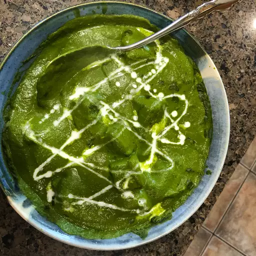

Palak Paneer
Palak paneer, a vibrant and nutritious Indian dish, marries tender paneer cubes with a velvety spinach gravy. This bright green curry, infused with garlic, ginger, and aromatic spices, offers a delightful balance of flavors and textures. The creamy spinach sauce envelops the soft paneer, creating a harmonious blend that is both satisfying and wholesome. Perfect with naan or rice, palak paneer is a delicious way to enjoy the goodness of spinach and the richness of paneer.
Ingredients:
- 1
- 2
- 3
- 4
Steps:
- 1
- 2
- 3
- 4